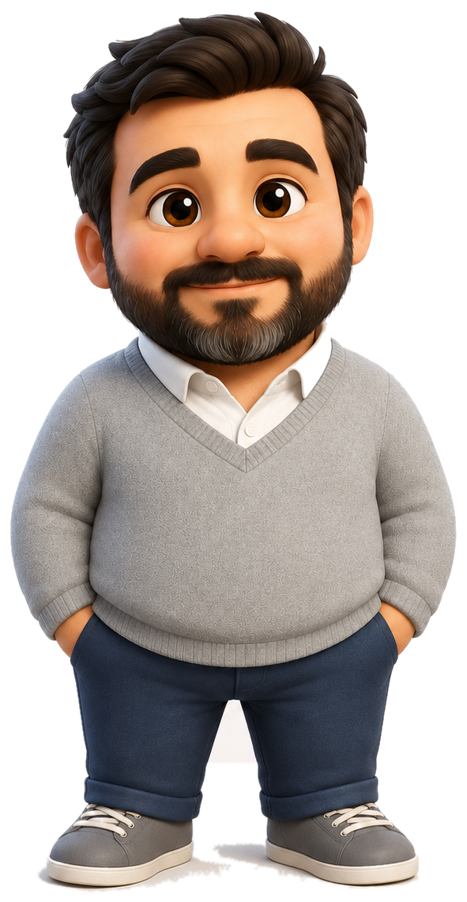
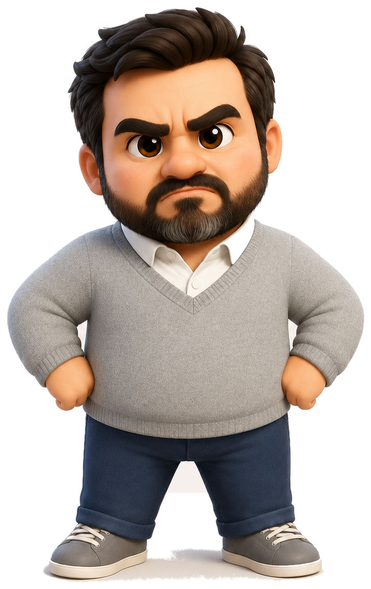
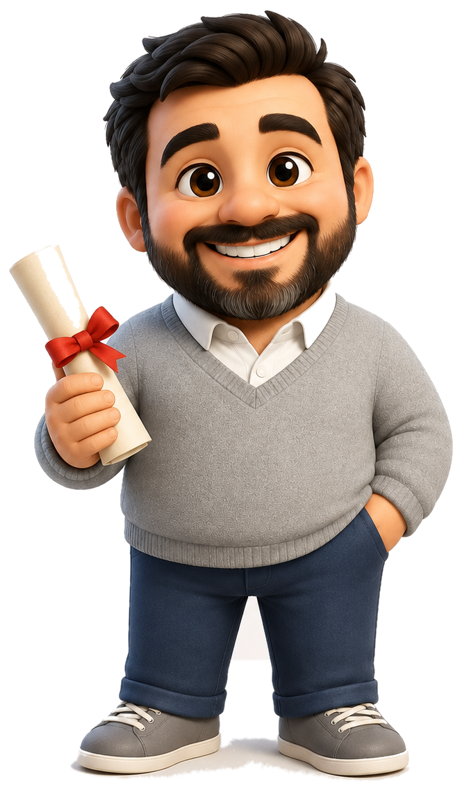
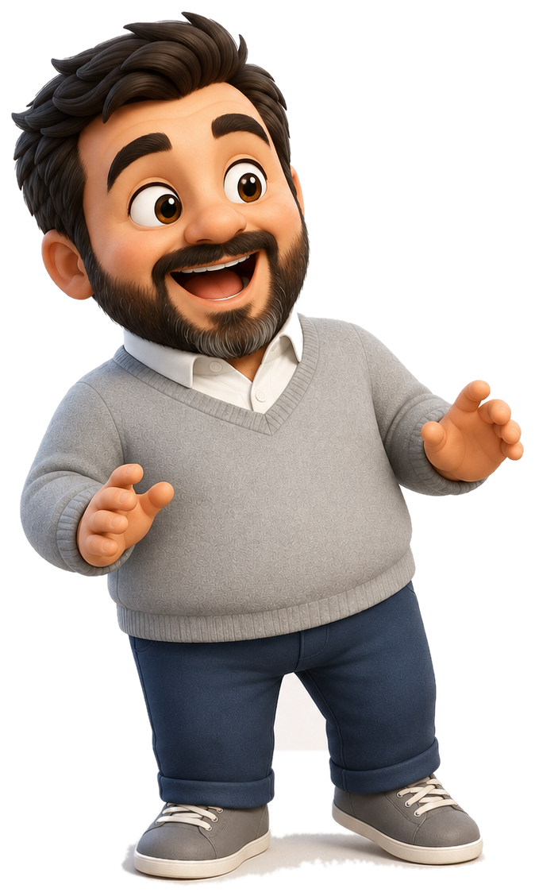
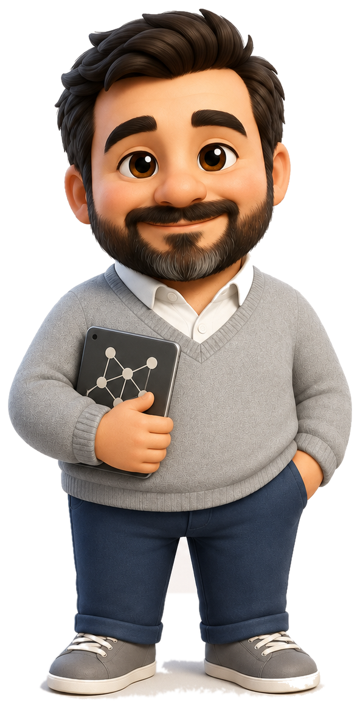

El análisis exploratorio lo mostró crudo: entre hablantes hay más variación que entre emociones. CMVN por hablante expresa cada audio como desviación del punto neutro de su propia voz — justo donde vive la emoción.

Misma representación, cuatro modelos: la regresión logística (bien regularizada: acá d ≫ n) le gana al MLP, al CRNN con atención y hasta al fine-tuning end-to-end de 317M de parámetros. Capacidad extra = varianza, no señal.

4 votantes: LogReg sobre WavLM (×2), HuBERT (×2) y wav2vec2 (×1) + un MLP (×1) entrenado con pseudo-hablantes — cada audio deformado en velocidad y ruido simula una voz nueva.
La prueba: le dimos HuBERT al MLP y mejoró solo… pero el ensemble empeoró. Se volvió más fuerte y más parecido al resto: aportó menos información nueva.
| antes | después | ||
|---|---|---|---|
| MLP solo | 0.874 | 0.883 | mejora ✓ |
| Ensemble | 0.890 | 0.887 | empeora ✗ |

Mismo modelo, sin reentrenar, sobre EMODB (454 audios, 6 clases compartidas):
La lección ① también es la herramienta clave contra el cambio de dominio: normalizar por hablante recupera +20 pts. El error que queda: enojo→feliz (comparten activación alta).
Grabá tu voz en la compu del stand y mirá cómo reacciona en vivo.
